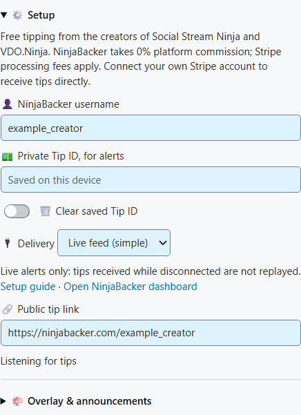

1. Conecta tu cuenta
Empieza con la aplicación de escritorio SSN o la extensión de Chrome. Mantén SSN encendido durante la transmisión.
- Abrir NinjaBacker. Crea tu cuenta y completa la configuración de Stripe para aceptar pagos.
- En el panel de NinjaBacker, abre Social Stream Ninja y copia tu Private Tip ID.
- En SSN, abre Dinero > Tiendas y apoyo > Plataformas conectadas > Donaciones de NinjaBacker > Configuración. Introduce tu nombre de usuario y Tip ID privado.
- Deja Entrega en Feed en directo (simple), activa las donaciones de NinjaBacker y haz clic en Guardar configuración.
Si Plataformas conectadas está oculto, cambia al modo completo en SSN.
El feed en directo no necesita webhook. Muestra propinas nuevas mientras está conectado; no reproduce las recibidas con SSN apagado.


2. Opcional: usa un webhook
Elige Webhook fiable para guardar propinas en cola durante hasta siete días mientras SSN está apagado.
- En NinjaBacker, abre Webhook. En Webhook Signature Secret, haz clic en Generate y copia el secreto. Si ya usas uno, copia ese.
- En la configuración de NinjaBacker de SSN, elige Webhook fiable, pega el secreto de firma y haz clic en Guardar configuración.
- Haz clic en Copiar URL del receptor en SSN. Pégala en el campo Webhook URL de NinjaBacker y haz clic en Save.

La URL del receptor empieza por:
https://api.socialstream.ninja/v1/ninjabacker/webhook/...Las URL del Tip Jar, del dock de chat y de otras visualizaciones van en OBS. No pueden recibir solicitudes webhook.
Volver al feed en directo
El cambio elimina las propinas en cola del receptor SSN. Borra también la antigua Webhook URL en NinjaBacker y guarda.
3. Añade tu visualización a OBS
- Para las alertas, elige Donaciones de NinjaBacker en Superposición de OBS para dentro de Tiendas y apoyo. Copia el enlace de la superposición.
- Para un objetivo acumulativo, abre Dinero > Tip Jar y medidor de objetivos. Elige el estilo y el objetivo, y copia su enlace.
- En OBS, añade una fuente Navegador y pega el enlace de visualización. Usa la misma sesión para SSN y la visualización.
Estilos del Tip Jar y ajustes del objetivo
Comparte tu página pública de propinas de NinjaBacker con los espectadores. Pon los enlaces de superposición en OBS y las URL del receptor en el campo webhook.
4. Comprueba la configuración
Abre la superposición de alertas NinjaBacker de SSN. En NinjaBacker, abre Testing y pulsa Send Test Tip. Debería aparecer una alerta de prueba en esa superposición.
Lee el resultado debajo de Send Test Tip. Webhook accepted confirma la recepción, no una alerta en OBS. Si falla, corrige la URL o el secreto de firma y envía otra prueba. Las pruebas del panel se reintentan durante cinco minutos.
Las propinas de prueba no añaden dinero al Tip Jar, no aparecen como donaciones pagadas en el chat ni activan recompensas pagadas.
¿No aparece la alerta de prueba?
Mantén SSN encendido y las donaciones de NinjaBacker activadas. Comprueba que el nombre de usuario y el Tip ID sean de la misma cuenta. Para webhooks, actualiza Delivery History en NinjaBacker y revisa la URL del receptor y el secreto de firma.
¿HTTP 405 o error de URL de visualización?
Copia la URL del receptor desde Webhook fiable en SSN, guárdala en NinjaBacker y envía una nueva propina de prueba. Guardar una URL nueva detiene los reintentos al destino anterior.

¿Las propinas aparecen en el chat pero no en el objetivo?
Revisa la sesión del Tip Jar y los filtros de fuente, tipo de donación y evento de pago. Usa un objetivo monetario para los importes. Los reembolsos no se restan de las alertas ni de los objetivos de SSN.